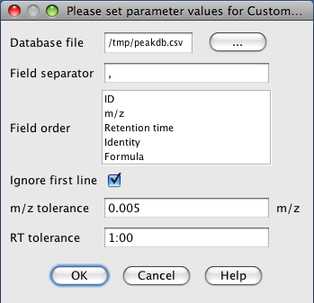

This method assigns identity to peaks according to their m/z and retention time values. The user provides a database of m/z values and retention times in CSV format (see below).
Database file has to be provided in CSV format (Comma-Separated Values). Such files can be exported from a spreadsheet software such as MS Excel, or edited manually using a text editor. The following examples shows the structure of the database file:
ID,m/z,Retention time (min),Identity,Formula 1,175.121,24.5,Arginine,C6H14N4O2 2,133.063,11.9,Asparagine,C4H8N2O3 3,134.047,11.7,Aspartate,C4H7NO4
If the m/z value or Retention time value in the CSV file is 0, then the value is considered as a wild card. E.g, the following item will match all peaks of 174.121 m/z without considering the retention time:
1,175.121,0,Arginine,C6H14N4O2
Setup dialog for the identification using the above example database file:
